Gold
| 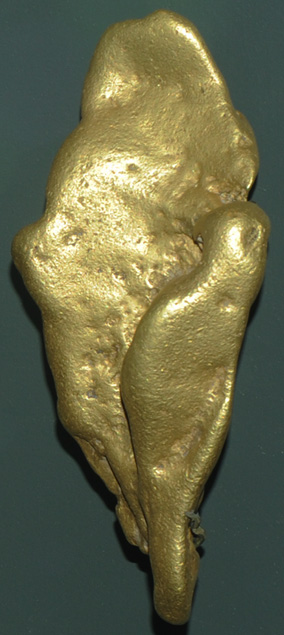 | 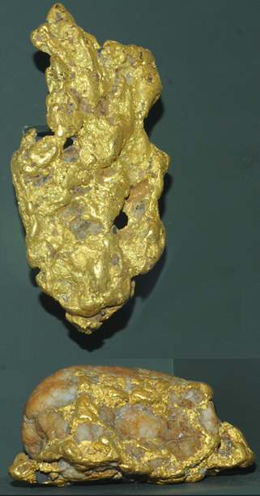 | These examples of natural gold nuggets are on display at the Smithsonian Museum of Natural History. The gold nugget at far left is about 15 cm long. It was found in California.
The two samples near left are from Whitehall mine, Spotsylvania County, Virginia. The bottom sample is about 12 cm long.
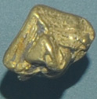
This 2.5 cm nugget is from Amador County, California.
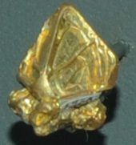
This 1.5 cm sample is from Grass Valley district, Nevada County, California.
|
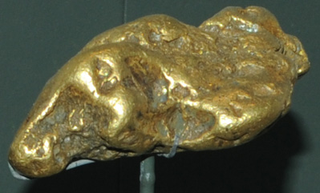
This gold nugget is from Yukon, Alaska and is about 9 cm long. | 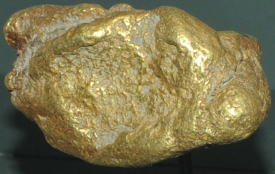This nugget is from Maxwell Land Grant, Colfax County, New Mexico and is about 7 cm long. |
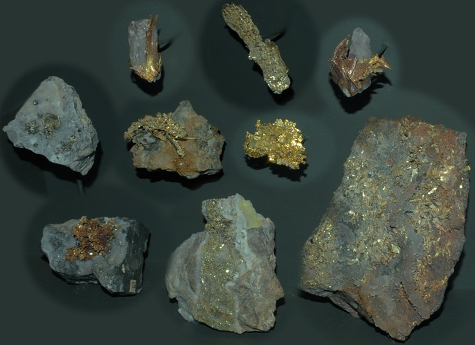
This is a collection of gold samples from Rosia-Montana, Transylvania, Romania. The largest sample is about 10x15 cm and they are all shown at the same scale.
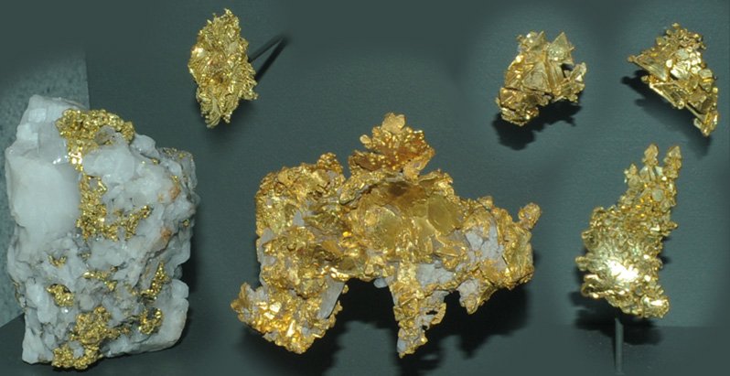
The two samples at left are from Mother Lode district, California. In the center is a sample from Placerville, California. The group of three samples at right are from Forest Hill District, Placer County, California. The left sample is about 8x10 cm and all are shown at the same scale.
| 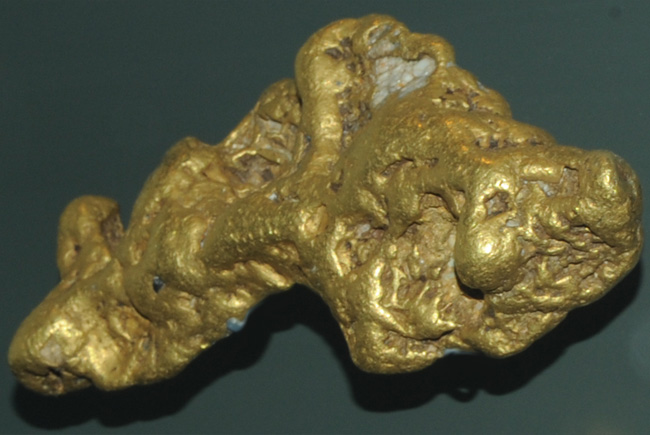 | This massive gold sample is from Union Placer mine, California. Its mass is 2544 grams and it is about 25 cm long. |
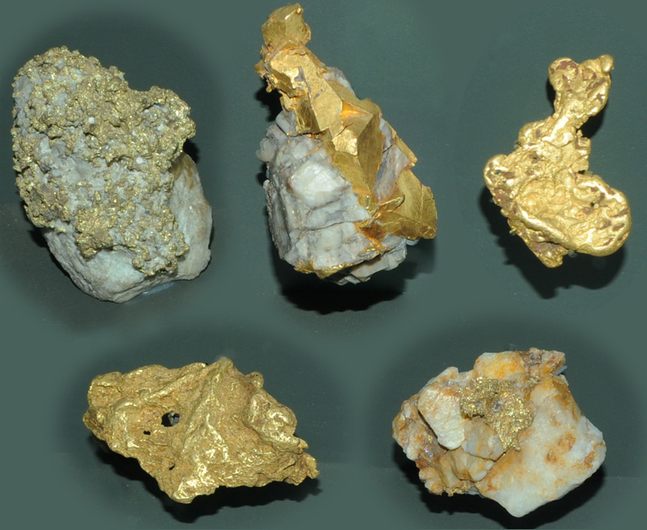
Top left: gold with quartz from Victoria, Australia, top center: gold with calcite from Australia, top right: gold from the Orinoco Valley, Venezuela, bottom left: gold from Colombia, bottom right: gold from Nova Scotia, Canada. The top left sample is about 4 x 6 cm and all samples are shown at the same scale.
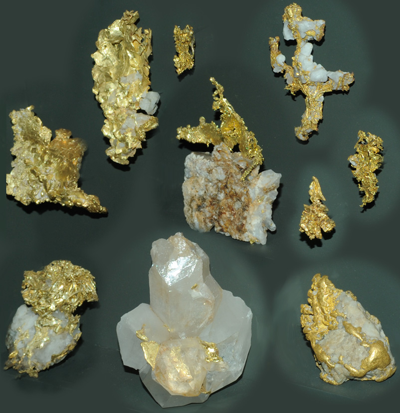
These are all samples of gold from Grass Valley district, Nevada County, California. The largest sample at the bottom is about 12 cm across and all samples are displayed at the same scale.
| 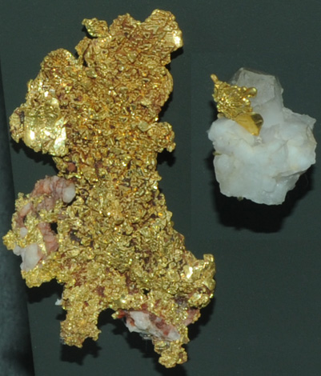These samples are from Placer County, California. The largest is about 9 cm tall. | 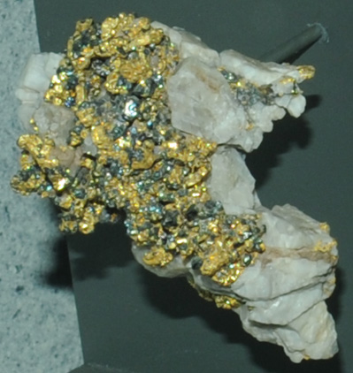This is gold with altaite and quartz from Sell mine, Sonora, California. Its largest dimension is about 11 cm. |
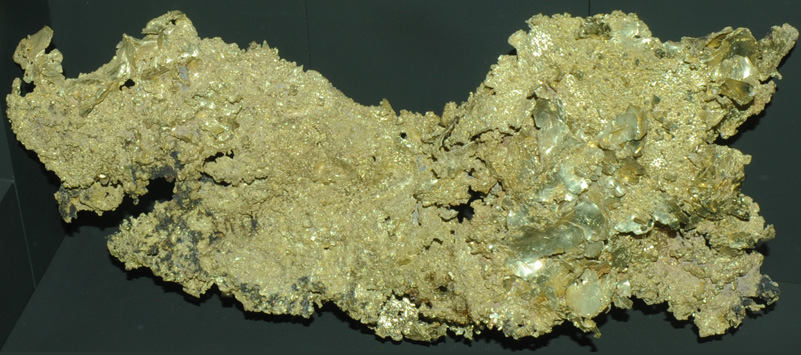
This large gold sample has a mass of 1612 grams and is from Eureka mine, California. It is almost 50 cm long!
| 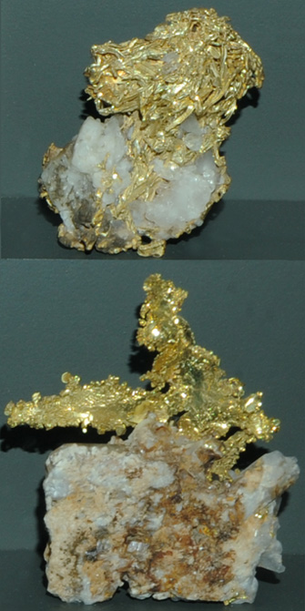 These samples are from Shore mine, Tuolumne County, California. The largest is about 10 cm wide. | 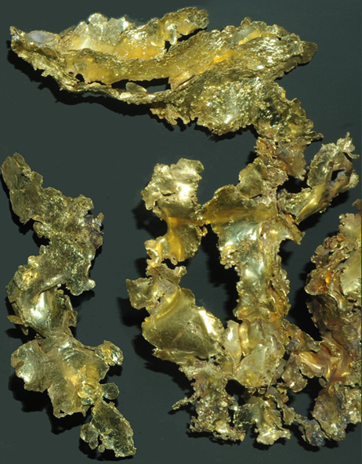 The large sample of gold ribbon above right is from Shore mine, Tuolumne County, California. It is about 35 cm tall. The smaller sample is also from California. The largest sample, called the triple ribbon, has a mass of 455 grams. It was found almost a hundred years after the 1848 gold rush in that part of California.
|
| These gold nuggets are shown at comparable scales, the largest sample being about 9x5 cm. Clockwise from top left, the samples are from: Alaska; Alaska; Unknown; Farrara Gulch, Arizona; Rogue River, Oregon. | 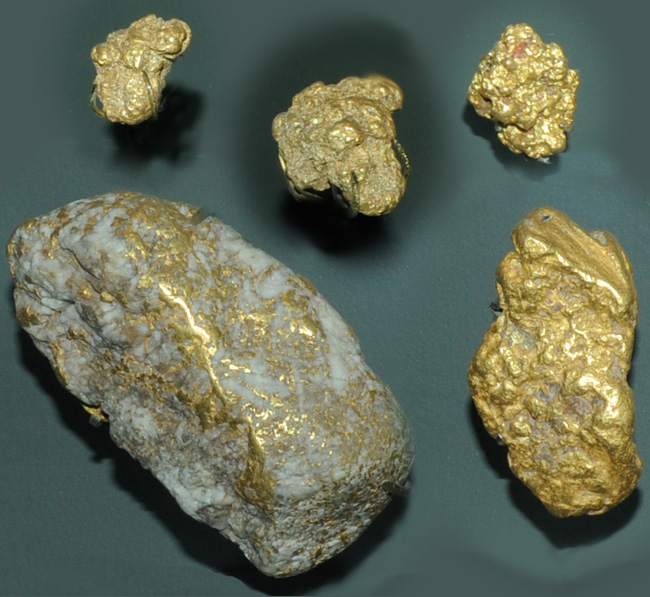 |
| 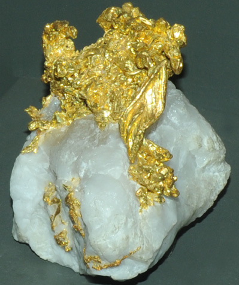Gold with quartz from California. The sample is about 8 x 10 cm. | 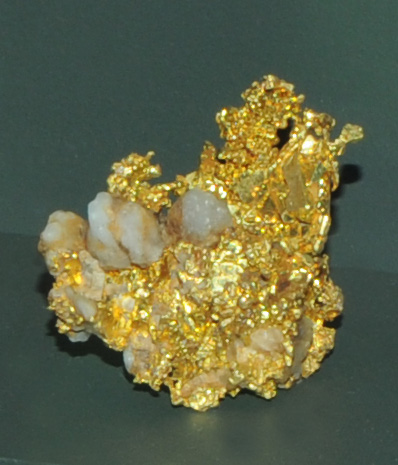This sample of gold with quartz is from Calaveras County, California. It is about 4 x 5 cm. |
| 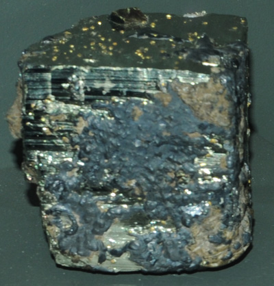
This is gold with pyrite and galena from Snettisharm district, Juneau, Alaska. It is almost cubic with a dimension of about 8 to 10 cm. 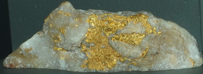This sample of gold with quartz is from Montgomery County, Maryland. It is about 13 cm long.
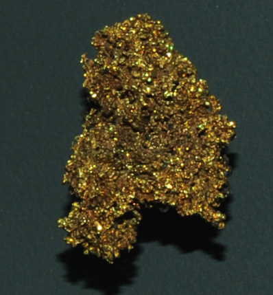This unusual gold sample with a granular appearance is from Colorado. It is about 3 x 5 cm in size.
|
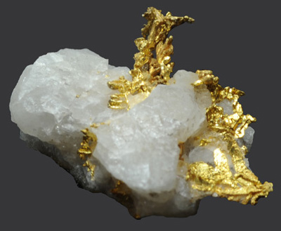 The sample above with gold embedded in quartz was photographed in the private collection of Bob Erdman. It's maximum dimension is about 2.5 cm.
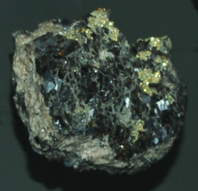
This sample is gold with galena from Gilpin County, Colorado. It is about 10 x 10 cm. 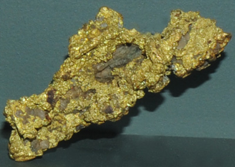 This gold sample is from the Sam Christian claim, Montgomery County, North Carolina. It is about 9 cm long.
|
| 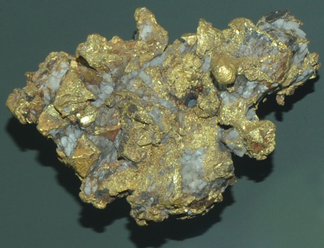 | This sample of California gold is about 9 x 13 cm. |
Mindat: Gold
|
Index |